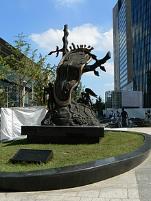

The Persistence of Memory (Catalan: La persistència de la memòria) is a 1931 painting by artist Salvador Dalí and one of the most recognizable works of Surrealism. First shown at the Julien Levy Gallery in 1932, since 1934 the painting has been in the collection of the Museum of Modern Art (MoMA) in New York City, which received it from an anonymous donor. It is widely recognized and frequently referred to in popular culture,[1] and sometimes referred to by more descriptive titles, such as "Melting Clocks", "The Soft Watches" or "The Melting Watches".

The well-known surrealist piece introduced the image of the soft melting pocket watch.[2] It epitomizes Dalí's theory of "softness" and "hardness", which was central to his thinking at the time. As Dawn Adès wrote, "The soft watches are an unconscious symbol of the relativity of space and time, a Surrealist meditation on the collapse of our notions of a fixed cosmic order".[3] This interpretation suggests that Dalí was incorporating an understanding of the world introduced by Albert Einstein's theory of special relativity. Asked by Ilya Prigogine whether this was in fact the case, Dalí replied that the soft watches were not inspired by the theory of relativity, but by the surrealist perception of a Camembert melting in the sun.[4]
It is possible to recognize a human figure in the middle of the composition, in the strange "monster" (with much texture near its face, and much contrast and tone in the picture) that Dalí used in several contemporary pieces to represent himself – the abstract form becoming something of a self-portrait, reappearing frequently in his work. The creature seems to be based on a figure from the Paradise section of Hieronymus Bosch's The Garden of Earthly Delights, which Dalí had studied.[7] It can be read as a "fading" creature, one that often appears in dreams where the dreamer cannot pinpoint the creature's exact form and composition. One can observe that the creature has one closed eye with several eyelashes, suggesting that the creature is also in a dream state. The iconography may refer to a dream that Dalí himself had experienced, and the clocks may symbolize the passing of time as one experiences it in sleep or the persistence of time in the eyes of the dreamer.
The orange clock at the bottom left of the painting is covered in ants. Dalí often used ants in his paintings as a symbol of decay.[8][9] Another insect that is present in the painting is a fly, which sits on the watch that is next to the orange watch. The fly appears to be casting a human shadow as the sun hits it. The Persistence of Memory employs "the exactitude of realist painting techniques"[10] to depict imagery more likely to be found in dreams than in waking consciousness.
The craggy rocks to the right represent a tip of Cap de Creus peninsula in north-eastern Catalonia. Many of Dalí's paintings were inspired by the landscapes of his life in Catalonia. The strange and foreboding shadow in the foreground of this painting is a reference to Puig Pení [ca].[11]